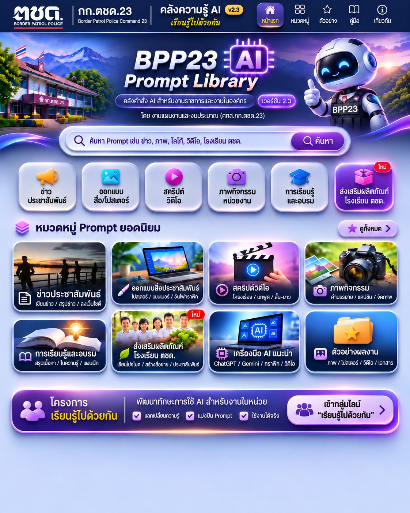

เปลี่ยนหัวข้อเป็น Prompt อินโฟกราฟิกความรู้ระดับพรีเมียม พร้อมตรวจสอบข้อเท็จจริงและภาพอ้างอิง
สร้าง Prompt →AI สนับสนุนการบริหารการเงินส่วนบุคคล • สร้างเว็บแอปรายรับรายจ่าย กันภาระหนี้ และวางแผนเงินออมด้วย Master Prompt V1.0
เปิดเครื่องมือสร้างเว็บแอป →Prompt วิเคราะห์สถิติและรายงานผลการปฏิบัติงาน
เปลี่ยนตารางและตัวเลขเป็นกราฟ KPI การจัดอันดับ และอินโฟกราฟิก พร้อมตรวจสอบข้อมูลก่อนสร้างภาพ
สร้าง Prompt →สร้างฉากเปิดตัวระดับภาพยนตร์ด้วย Google Flow + Canva พร้อมแผน Logo Lock รักษาตราสัญลักษณ์และข้อความต้นฉบับ
เปิดสตูดิโอภาพยนตร์ →สร้าง Prompt คลิปสอนทำอาหาร 6 ฉาก พร้อมสูตร วัตถุดิบ เสียงบรรยายไทย และแผนตัดต่อ Google Flow
เปิดสตูดิโออาหาร →สร้างภาพเทศกาลอัจฉริยะ เลือกบุคคล ชุด ฉาก แสงสี และสร้าง Prompt ภาพต่อเนื่องหรือ Google Flow
เปิดสตูดิโอ →เรียนรู้การสร้างเว็บไซต์ด้วย AI
ทดลอง 11 UI Components พร้อมตัวอย่างโต้ตอบและ Prompt ภาษาไทย
เข้าสู่บทเรียน →🔐 ข้อควรระวัง: ห้ามป้อนข้อมูลลับ ข้อมูลส่วนบุคคล หรือข้อมูลราชการที่ไม่ได้รับอนุญาตลงใน AI สาธารณะ ตรวจสอบข้อเท็จจริง ชื่อ ยศ ตำแหน่ง ตัวเลข และความถูกต้องก่อนนำผลงานไปใช้ทุกครั้ง
📌 Master Prompt ในหน้านี้เป็นแม่แบบใหม่เพื่อการเรียนรู้ ไม่ใช่การคัดลอกเอกสาร Private ของหน่วยงาน และไม่ใช่คำสั่งให้ AI ข้ามการตรวจสอบหรืออนุมัติ